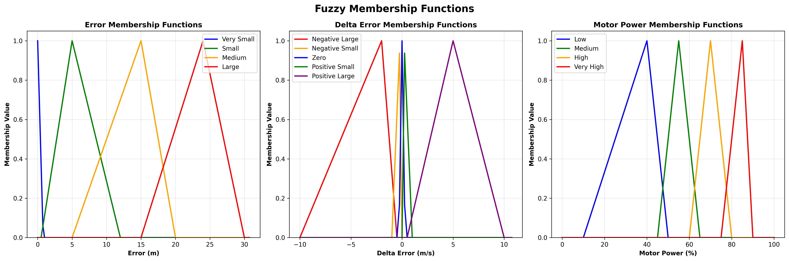
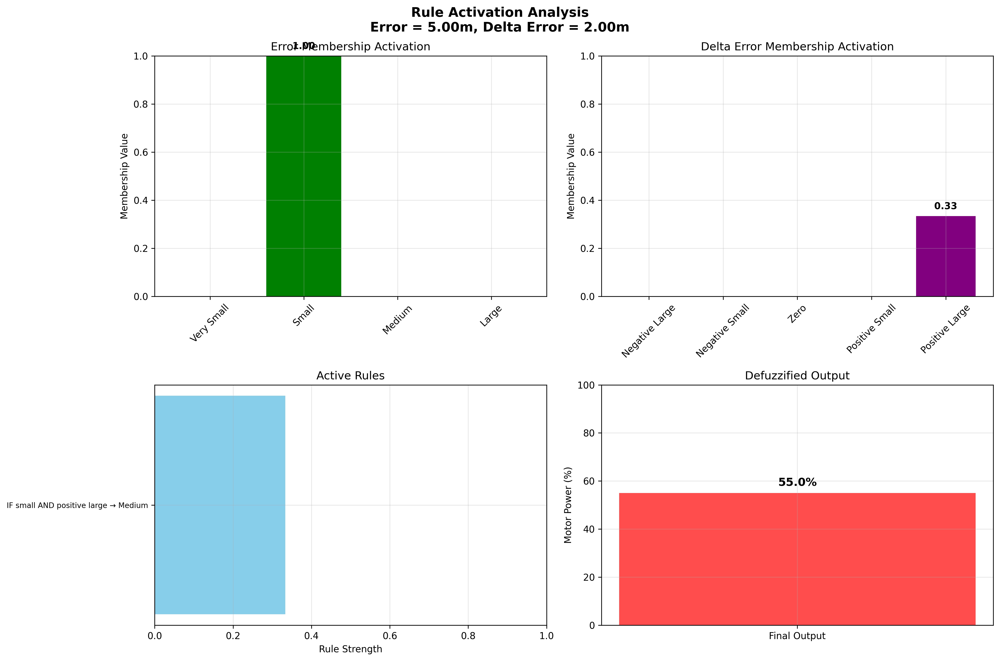
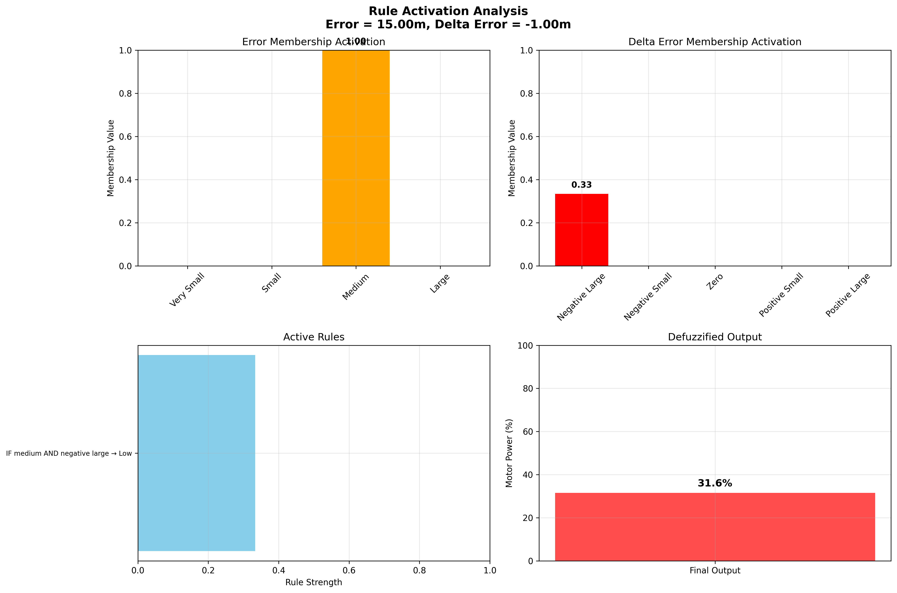
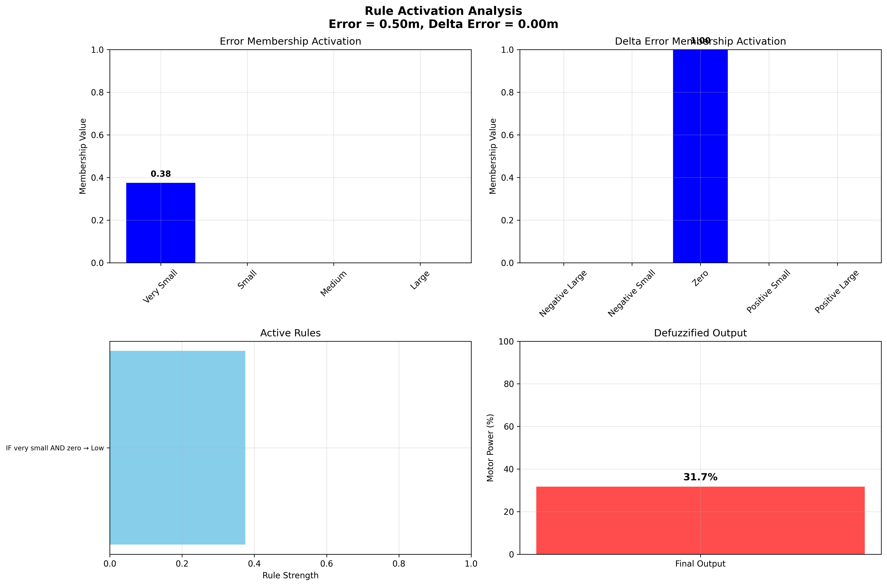
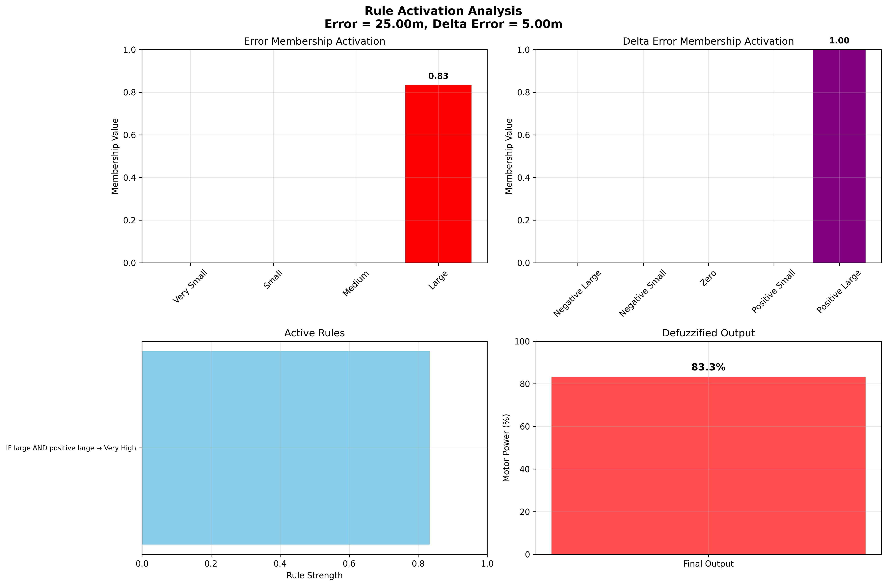

üéØ Fuzzy Elevator Controller - Complete Analysis Report
Report Generated: June 23, 2025
Project: Projeto-2-C213 - Elevator Fuzzy Control System
Controller Type: Fuzzy PD Controller with Mamdani Inference
1. üèóÔ∏è System Overview
This elevator fuzzy controller uses a Mamdani inference system with two inputs and one output:
- Error (m): Distance between current and target position (0-36m range)
- Delta Error (m/s): Rate of change of error (-10 to +10 range)
- Motor Power (%): Output control signal (0-100% range)
Building Specifications:
• Height: 36 meters (11 floors)
• Max Speed: 1.0 m/s
• Sampling Time: 200ms
• Direction Control: k1_up = +1.0, k1_down = -1.0
2. üìà Membership Functions (2D)
The 2D membership functions define how input values are mapped to linguistic terms:

Figure 1: 2D membership functions for Error, Delta Error, and Motor Power variables.
Each plot shows how crisp values are converted to fuzzy membership degrees.
Membership Function Details:
- Error: very_small, small, medium, large
- Delta Error: negative_large, negative_small, zero, positive_small, positive_large
- Motor Power: very_low, low, medium, high, very_high
3. üìã Fuzzy Rules Table
The rule table shows the complete mapping between input combinations and output decisions:
Figure 2: Heatmap visualization of all 20 fuzzy rules.
Darker colors indicate higher motor power levels.
Rule Logic: The controller applies higher power when error is large,
and adjusts based on delta error to provide smooth acceleration/deceleration.
When delta error is negative (moving towards target), power is reduced for gentle approach.
4. üèîÔ∏è Control Surface (3D)
The 3D control surface shows the complete behavior of the fuzzy controller across all input combinations:
Figure 3: 3D control surface mapping Error × Delta Error → Motor Power.
This surface represents the complete behavior of the fuzzy inference system.
Surface Analysis:
- Higher elevations indicate higher motor power output
- Smooth transitions between adjacent regions ensure stable control
- The surface shape reflects the underlying rule structure
- Contour lines show iso-power levels for quick analysis
5. ⚡ Rule Activation Examples
These examples show how specific input combinations activate different fuzzy rules:
Example 1: Medium Error, Positive Delta

Figure 4a: Error = 5.0m, Delta Error = 2.0m/s (Medium error, positive delta)
Example 2: Large Error, Negative Delta

Figure 4b: Error = 15.0m, Delta Error = -1.0m/s (Large error, negative delta)
Example 3: Small Error, Zero Delta

Figure 4c: Error = 0.5m, Delta Error = 0.0m/s (Small error, zero delta)
Example 4: Very Large Error, Large Positive Delta

Figure 4d: Error = 25.0m, Delta Error = 5.0m/s (Very large error, large positive delta)
6. üî¨ Technical Analysis
Control Strategy
The fuzzy controller implements a sophisticated PD-like control strategy:
- Proportional Component: Error magnitude determines base power level
- Derivative Component: Delta error provides anticipatory control
- Smooth Operation: Fuzzy inference ensures gradual transitions
- Direction Awareness: Negative k1 values handle downward movement
Rule Distribution Analysis
Rule Count by Power Level:
• Very Low: 8 rules (40%)
• Low: 4 rules (20%)
• Medium: 4 rules (20%)
• High: 2 rules (10%)
• Very High: 2 rules (10%)
Key Features
- Conservative Approach: 60% of rules use low/very low power for safe operation
- Anticipatory Control: Delta error prevents overshoot and oscillation
- Smooth Transitions: Fuzzy membership functions eliminate abrupt changes
- Robust Performance: Multiple rules activate simultaneously for stability
Performance Characteristics
- ✅ Stability: Smooth control surface prevents oscillations
- ✅ Efficiency: Minimal power for small errors
- ✅ Speed: High power for large errors
- ✅ Precision: Fine control near target position
Usage Instructions:
To generate these visualizations, run: python plot_rules.py
Select option 1 for complete analysis or individual options for specific plots.